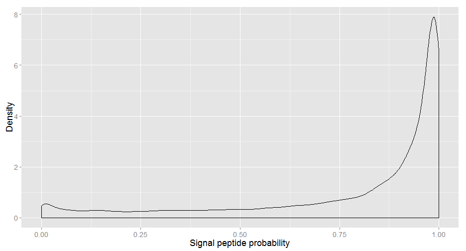
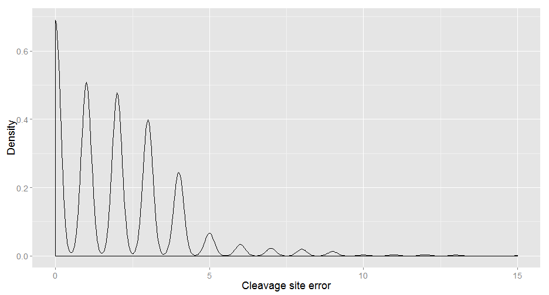
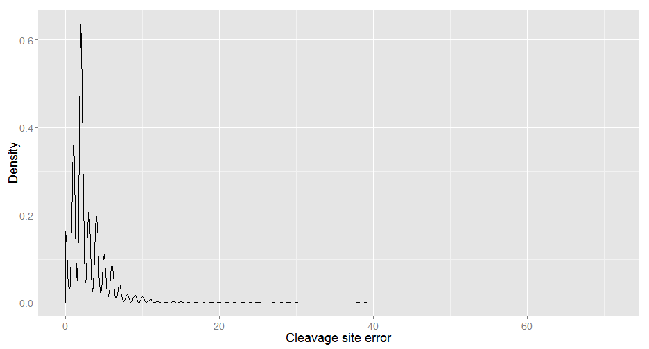
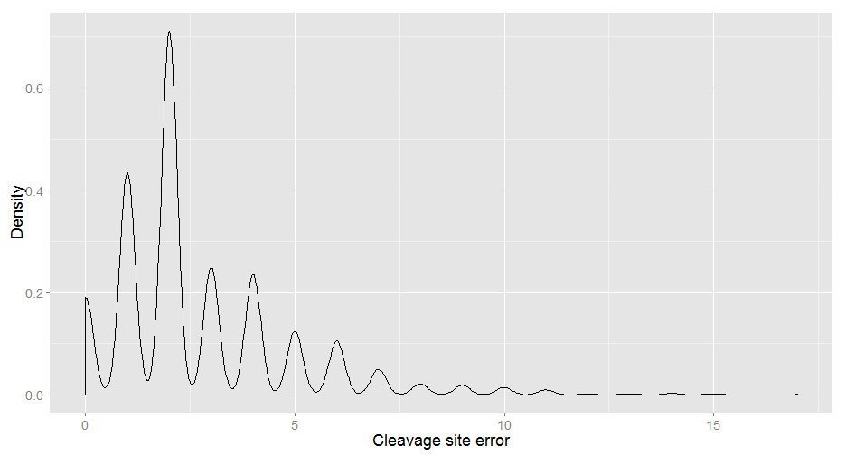
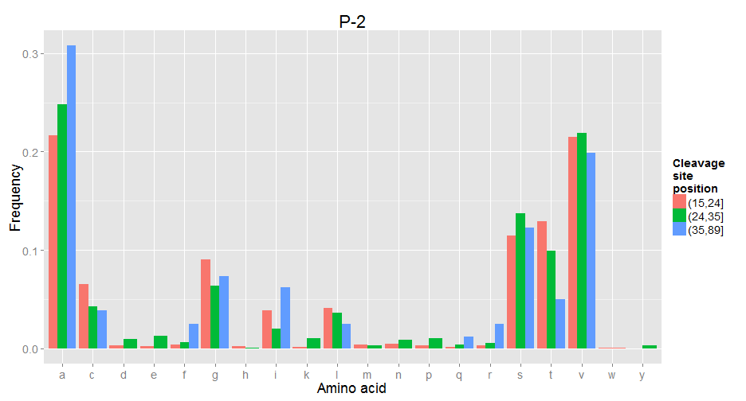
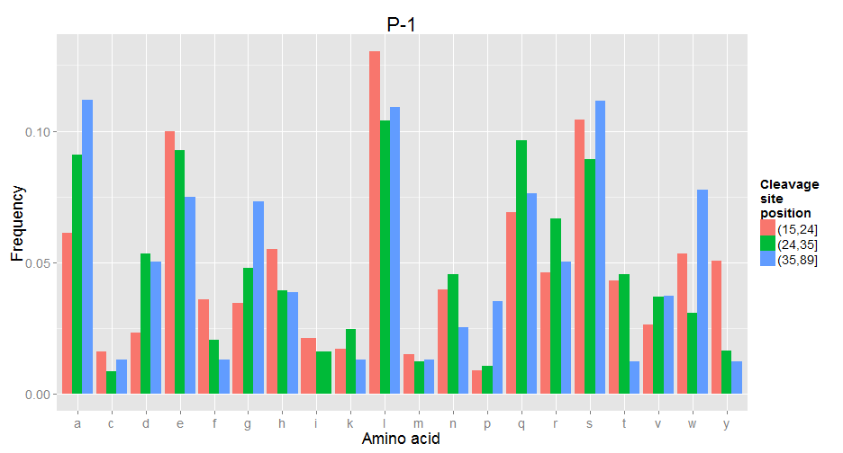
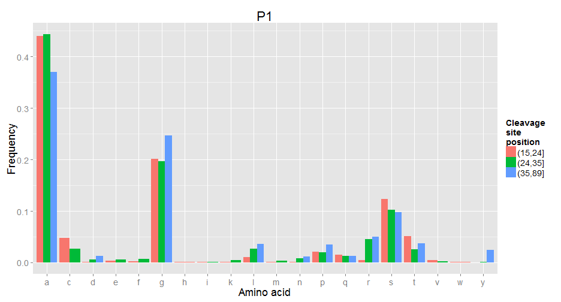
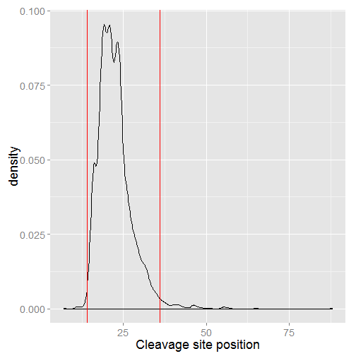

Signal peptides - short, N-terminal sequences directing protein to final destination.
Goals:
- predict 'accurately' presence of signal peptide,
- predict 'accurately' cleavage site.
Michal Burdukiewicz, Piotr Sobczyk
Signal peptides - short, N-terminal sequences directing protein to final destination.
Goals:

| Probability of signal peptide | |
|---|---|
| (6,15] | 0.80 |
| (15,24] | 0.84 |
| (24,35] | 0.68 |
| (35,89] | 0.24 |

Mean cleavage site error: 2.5469
Median cleavage site error: 2


| Position | N | prop | |
|---|---|---|---|
| 1 | (6,14] | 21 | 0.01 |
| 2 | (14,36] | 3812 | 0.98 |
| 3 | (36,89] | 64 | 0.02 |
\[ \huge{f_s = \frac{\sum_{i = 1}^{N} 1 - f_{i}}{N}} \]
\(\huge{N}\) - number of proteins
\(\huge{f_i}\) - frequency of a given amino acid in the mature protein








| Position | N | prop | |
|---|---|---|---|
| 1 | (6,14] | 21 | 0.01 |
| 2 | (14,36] | 3812 | 0.98 |
| 3 | (36,89] | 64 | 0.02 |
| Position | N | |
|---|---|---|
| 1 | 7 | 1 |
| 2 | 11 | 4 |
| 3 | 12 | 2 |
| 4 | 13 | 3 |
| 5 | 14 | 11 |
Query used to gather sequences of proteins with signal peptides:
select:(keyword:signal)
AND taxonomy:"Eukaryota [2759]"
AND created:[1950 TO 2010]
AND reviewed:yes
AND annotation:(type:signal confidence:experimental)
| Experiment | N | |
|---|---|---|
| 1 | No | 14 |
| 2 | Yes | 3 |
| 3 | Not assessed | 4 |
| position | exp | |
|---|---|---|
| GLU2B_HUMAN | 14 | Yes |
| GLU2B_MOUSE | 14 | Yes |
| ICIW_WHEAT | 12 | Not assessed |
| LIP2_CANRU | 14 | Not assessed |
| PLSC_PHYPO | 14 | Not assessed |
| SCX9_MESMA | 14 | Not assessed |
| VSI2_TRYBB | 12 | Yes |